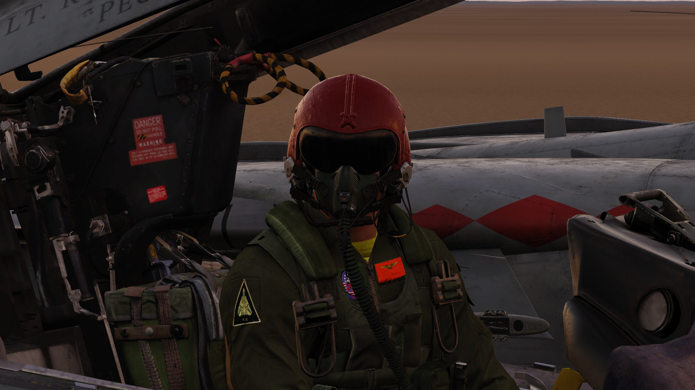
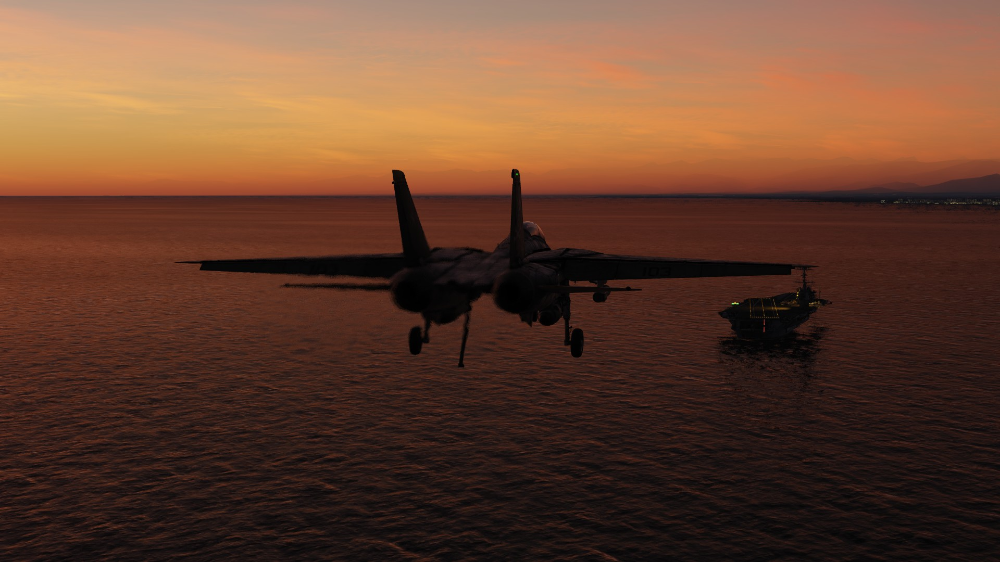
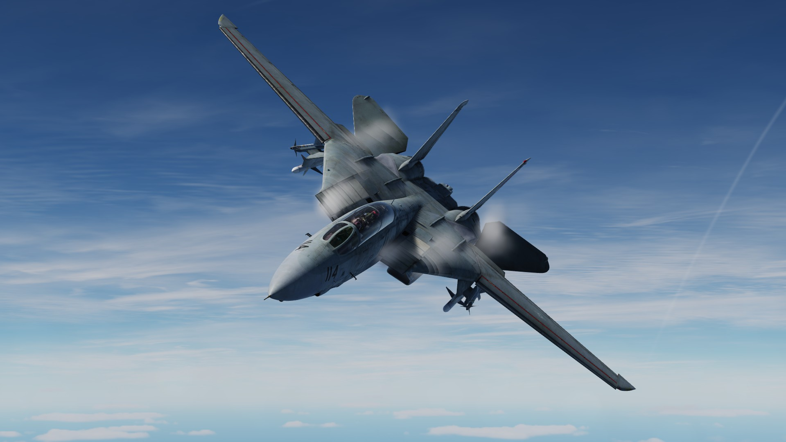
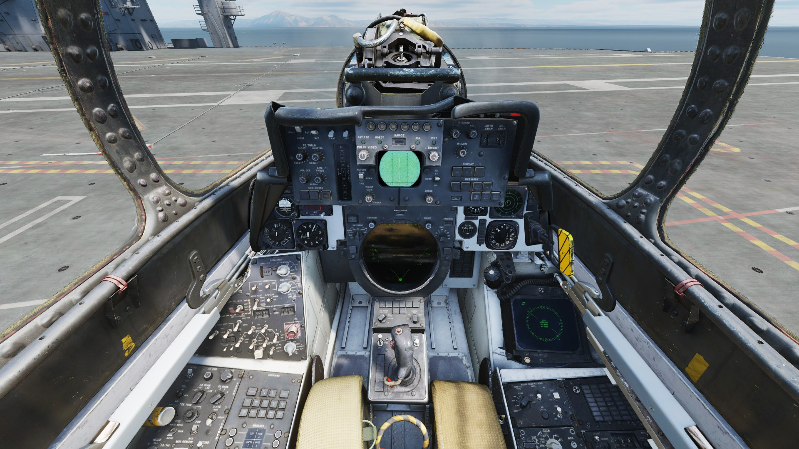

Back to top
Back to top
Who do you think of when you think of Jester? The clown guy? Well WRONG, you should be thinking of THE Jester.
So you are probably asking yourself who is this THE Jester? Well good question! Jester is a U.S navy F-14A/B Radio Intercept Officer or RIO for short. Jester has had a very successful career serving with a ton of navy squadrons including VF-11, VF-24, VF-32, VF-103 and many more. Although Jester doesn’t fly the plane and unlike the cool chad pilot doesn’t sit in the front, his job is very important and is vital to the survival of the crew and plane! There are a lot of things to talk about when it comes to Jester, his duties, hobbies and hidden talents which will all be talked about in this website
Jester has had a long and great career in the navy, flying with tons of squadrons such as:
VF-103 and VF-102 pictured
There are a lot more to list but these are just some of the great squadrons the great Jester has served in. Jester is also quite the traveler having been to countless countries and developing foreign relations while at it. Jester is so famous that he was asked to be included in the first Top gun! He played the role of the flight instructor with the callsign "Jester"
So what does Jester actually do? Well a lot of responsibilities come with operating a multi-million dollar jet. Such responsibilities for Jester include operating the AN/AWG-9 radar, AN/ALQ-165ASPJ jammer, starting up the aircraft, managing the countermeasures system, switching between A/G and A/A master modes and many more systems which will be outlined below.
An F-14 coming in for a landing
To lessen the workload of the pilot the AWG-9 radar is controlled by the RIO. The AWG-9 is a very powerful radar and can detect targets over 100km away. It can also track multiple targets at once switching between RWS and TWS. The radar is probably the most complex system in the Tomcat and is no easy thing to master. Having to manage such a complex radar while most likely being in a combat environment puts a lot of work on the RIO so Jester has to stay sharp all the time.
Typically other jets and air defenses wont just let you shoot at them or violate their airspace, meaning that they are going to shoot at you! So what does Jester do? He activates the jammer, making it harder for the enemy to get a radar lock on your precious aircraft.
The F-14 is a multirole aircraft meaning that it can engage both air and ground threats. When it comes to ground striking capabilities the Tomcat can deploy a range of Zuni unguided missiles, "dumb" and "smart" bombs. Where Jester comes in is the actual setup of the weaponry needed to perform the task given. Jester has to select the weapon, set its fuzing, the quantity of bombs dropped with a button press, distance which the bombs will land from each other and the targeting mode. When it comes to delivering smart weapons such as the GBU-12,16 Jester has full control of the LANTIRN targeting pod. Jester finds the target using the pod, guides the pilot towards it and gives the pilot callouts such as the distance from the target and time to bomb drop. Once the bomb has been released Jester now has to fire the laser built into the LANTIRN pod to guide the bomb to its target.
Jester is most active when it comes to aerial combat, since this is where he must manage the Tomcats radar and defensive systems. Jester can lock on to a target or multiple targets at once and engage them. Once Jester has a radar lock on the target he can go ahead and let loose a missile. From the backseat Jester can launch two different types of missiles, the AIM-7 Sparrow and the AIM-54 Phoenix making sure that whoever is infront of him and the pilot...well doesn’t live to see another day.
Jester plays a big part in starting up the aircraft. While the pilot is starting up the engines and setting up his systems, Jester is in the back warming up the radar and performing an INS alignment. The INS is crucial to the aircraft since it is what the pilots use to navigate. The INS contains waypoints which can be used to navigate in both good and bad weather conditions. So without Jester in the back pressing all those buttons the plane would get lost within minutes! Below you can view a picture of the RIO cockpit, as you can see there are a lot of switches and systems involved in operating the aircraft.
RIO backseat
As you can see Jester is pretty smart and hardworking, having to manage all those systems is no game. But even though his job is very demanding, Jester does find ways to make things better for himself and the pilot. God forbid if you didnt catch the third wire or hell even worse missed the carrier landing deck all together, because Jester will make some of the corniest but funny jokes on the planet. Some include; laughing like a school girl, telling you he has to go to the bathroom, call you fat, make horrible expressions of celeberties and so much more. For more info on Jester’s amazing voice lines click on this link.